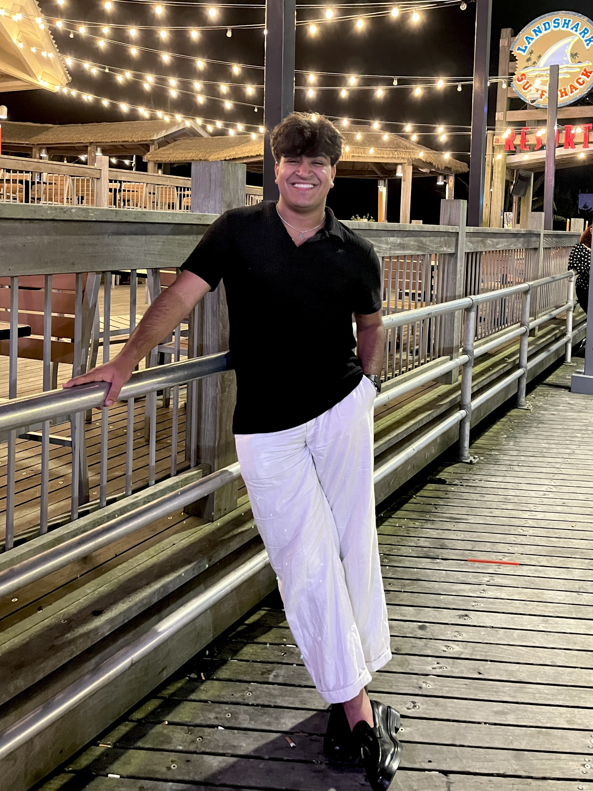

Phase 2&3 Course Goals
1. Foster the creative habits of mind
By engaging in diverse projects within digital composition, we venture into new eras, break away from conventional approaches, and tackle challenges with inventive solutions. Cultivating a creative mindset extends beyond artistic expression; it's about discovering fresh methods to communicate and captivate audiences with impact. For example, I am not the most artistic and creative and that can be seen throughout the projects “Special Effects in Premiere Pro” and “Adobe After Effect Animation”. However, I tried my best and learned both of the programs. I plan on using these for my final project as well to catch the user's eyes.
2. Engage with others in a workshop environment
Collaboration plays a pivotal role in this course. We'll be actively involved in a workshop setting, exchanging our work, offering constructive feedback, and participating in meaningful discussions to enhance our collective learning experience. Every workshop has not only made my projects better but me more creative. As we know, I am not the most creative, however, the insights of working with my peers, it has helped me be more. More creative and more willing to engage and learn.
3. Think deeply about craft
Creating digital compositions encompasses more than technical expertise. It revolves around intentional decisions in design, content, and presentation. As students, we explore the complexities of digital craftsmanship, examining current compositions to grasp the subtleties of compelling storytelling and effective communication in the digital domain. For example, nearly all my projects and makings in this Phase of the portfolio have to do with “Oral Health”. Oral Health is a topic I want to focus on not only right now in this class, but also in the future of the class for my final project, and not only in the final project it is also something I am very passionate about, and want to get into the oral health care field.
4. Engage in sustained research and skills development.
To thrive in digital composition, we engage in an ongoing process of research and skill enhancement. Delving deeply into our selected themes, we collect pertinent information and insights. Concurrently, we refine our technical proficiency, mastering diverse digital tools and platforms essential for crafting influential digital media. Not only have I learned a lot about “Oral health”, but I have learned to use some what of Adobe After Effects, and Adobe Animator, and used features like Special Effects.
5. Learn to present your work
Successful delivery is crucial for a digital composition to connect with its audience. Throughout this course, we won't just develop captivating content but also acquire skills in proficient presentation. This encompasses multimedia presentations and user interface design, guaranteeing that our creations are not only influential but also accessible and engaging for a wider audience in the digital realm. After doing the multi-media presentation and presenting weekly to the group about my research, I have become slightly more comfortable presenting. I am not where I want to be and am super far from it. I hope to get there through this class!
Phase 4 Course Goals
1. Foster the creative habits of mind
If there is one thing I have learned in this class is that the sky is the limit when it comes to imaging and making what you want to make. For example, not only did I make a presentation on something I am passionate about but also with all the creative elements I implemented into the presentation itself, I did well trying to be as creative and fun as possible.
2. Engage with others in a workshop environment
As for someone whose coding and artistic ability are not highly regarded, I was able to do well in this class. I think the reason for that has to be the artistic and creative minds of my classmates. Engaging with others elevated my final project with custom CSS and unique code and made me feel more confident.
3. Think deeply about craft
My final project came out to over 24 HTML pages. I think I did a good job outlining every part of the project, something that helped me was the figma and drawing step-by-step steps from page to page. This allowed me to dig deeper and think more about my craft.
4. 4. Engage in sustained research and skills development
Adding a button even when in the project we did at the beginning of the semester has always been difficult for me. However, with research and help from the professor (and some classmates), I was able to find and implement a unique and cool button that goes well with my final project and was very fitting.
5. Learn to present your work
One thing I can proudly walk away with in this class is the ability to be comfortable with presenting whatever I have made no matter how bad I think it may be because someone will always find it cool or interesting. For example, I think my final presentation is very basic and nothing crazy and even though that may be the case, I have numerous people compliment it and it made me feel confident I got a sense of pride which is bad but in some cases can be very useful. I hope this carries over to my profession and other classes as well.

generated by Pitt Fuego
“Why make a spark when you can light a fire?